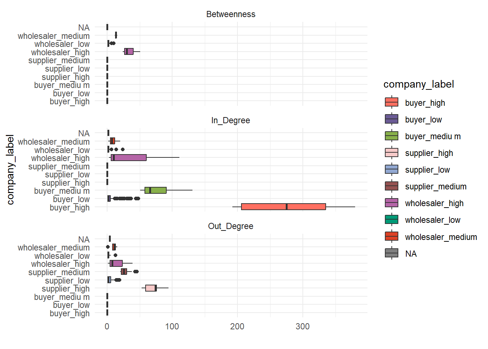
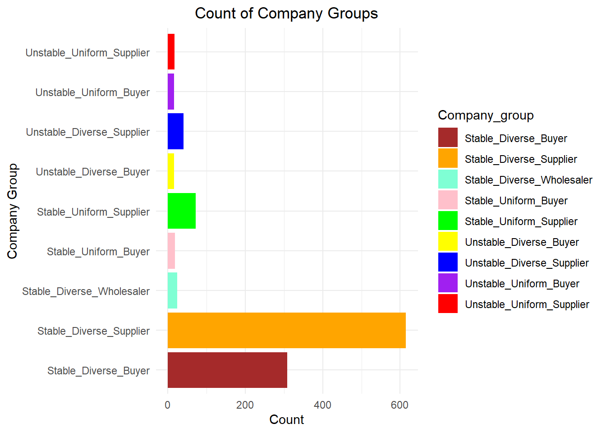

show the code
pacman::p_load(jsonlite, tidygraph, ggraph, visNetwork, lubridate, tidyverse,readxl)The country of Oceanus has requested the assistance of FishEye International in identifying companies that may be involved in illegal, unreported, and unregulated (IUU) fishing. As part of this collaboration, FishEye’s analysts have been provided with import/export data related to Oceanus’ marine and fishing industries.
To facilitate their analysis, FishEye has transformed the trade data into a knowledge graph. During their analysis, FishEye analysts have found that node-link diagrams provide a valuable high-level overview of the knowledge graph. However, they are now seeking visualizations that offer more detailed insights into patterns involving entities within the knowledge graph.

Based on FishEye’s previous experiences, they are aware that companies engaged in illegal fishing tend to cease their operations temporarily but often resume their activities under different names.
The objective of this exercise is to compare the activities of these companies over time and identify any indications of their potential return to illicit practices.
This exercise source is from: Mini-Challenge 2 task 1
The code chunk below uses pacman::p_load() to check if packages are installed. If they are, they will be launched into R. The packages installed are:
pacman::p_load(jsonlite, tidygraph, ggraph, visNetwork, lubridate, tidyverse,readxl)jsonlite: A simple and robust JSON parser and generator for R.
tidygraph: this package provides a tidy API for graph/network manipulation.
ggraph: ggiraph is a tool that allows you to create dynamic ggplot graphs.
visNetwork: an R package for network visualization, using vis.js javascript library.
lubridate: an R package that makes it easier to work with dates and times.
tidyverse: A collection of core packages designed for data science, used extensively for data preparation and wrangling.
readxl：An R package makes it easy to get data out of Excel and into R.
All packages can be found within CRAN.
In the code chunk below, fromJSON() of jsonlite package is used to import mc2_challenge_graph.json into R environment.
mc2_data <- fromJSON("data/mc2_challenge_graph.json")For the purpose of this study, a directed multi-graph is provided. There are totally 34552 nodes and 5464092 directed edges.
Node Attributes:
id – Name of the company that originated (or received) the shipment.
shpcountry – Country the company most often associated with when shipping.
rcvcountry – Country the company most often associated with when receiving.
dataset – Always ‘MC2’.
Edge Attributes:
arrivaldate – Date the shipment arrived at port in YYYY-MM-DD format.
hscode – Harmonized System code for the shipment. Can be joined with the hscodes table to get additional details.
valueofgoods_omu– Customs-declared value of the total shipment, in Oceanus Monetary Units (OMU).
volumeteu– The volume of the shipment in ‘Twenty-foot equivalent units’, roughly how many 20-foot standard containers would be required. (Actual number of containers may have been different as there are 20ft and 40ft standard containers and tankers that do not use containers)
weightkg– The weight of the shipment in kilograms (if known).
dataset– Always ‘MC2’.
type– Always ‘shipment’ for MC2.
generated_by – Name of the program that generated the edge. (Only found on ‘bundle’ records.)
Note: Some data provided by Oceanus was anonymized leading to some shipper and receiver names/countries being omitted. These are represented by numerical names in the graph.
Extracting nodes : involves creating a tibble data frame called mc2_nodes from the mc2_data list object by using the select() function, which serves two purposes: selecting the required fields and re-organise the sequence of the fields.
mc2_nodes <- as_tibble(mc2_data$nodes) %>%
select(id, shpcountry, rcvcountry)Extracting Edges: The code chunk is used to extract edges data table from mc2_data list object and save the output in a tibble data frame object called mc2_edges.
mc2_edges <- as_tibble(mc2_data$links) %>%
mutate(ArrivalDate = ymd(arrivaldate)) %>%
mutate(Year = year(ArrivalDate)) %>%
select(source, target, ArrivalDate, Year, hscode, valueofgoods_omu,
volumeteu, weightkg, valueofgoodsusd) %>%
distinct()mutate() is used two times to create two derive fields.
ymd() of lubridate package is used to covert arrivaldate field from character data type into date data type.
year() of lubridate package is used to convert the values in ArrivalDate field into year values.
select() is used not only to select the field needed but also to re-organise the sequent of the fields.
The Harmonized System is a standardized numerical method of classifying traded products. It is used by customs authorities around the world to identify products when assessing duties and taxes and for gathering statistics.
In the original dataframe, there are numerous HScodes that are unrelated to “Fishing”. To filter out observations specifically related to fishing, we utilize the grep function to select only those HScodes that begin with 301-308.
# filters the dataframe mc2_edges hscode start with 301-308
mc2_edges <- mc2_edges[grep("^30[1-8]", mc2_edges$hscode), ]
# Count each hscode frequency
hscode_counts <- table(mc2_edges$hscode)
# Sort by count from highest to lowest
hscode_counts_sorted <- sort(hscode_counts, decreasing = TRUE)
# Create a dataframe containing hscode and count
hscode_counts_df <- data.frame(hscode = names(hscode_counts_sorted), count = hscode_counts_sorted, stringsAsFactors = FALSE)After the compilation of the hscode_counts_df, it is important to determine the meaning of the HScode. Therefore, we proceed by reading the HScode list and employing the left_join function to establish a linkage between the item description and the hscode_counts_df data frame.
# Remove the last zero in hscode
hscode_counts_df$hscode <- sub("0$", "", hscode_counts_df$hscode)
# R an Excel file "HScode"
HScode_list <- read_excel("data/HScode.xlsx", sheet = 1)
# Change the HS Code data type
HScode_list$`HS Code` <- as.character(HScode_list$`HS Code`)
# hscode_counts_df left join HScode_list to improt the HScode description
merged_data <- left_join(hscode_counts_df, select(HScode_list, -S.No.), by = c("hscode" = "HS Code"))We have summarized the top 6 most frequently occurring HScodes in the dataframe, along with their corresponding fish types based on the HScode descriptions. These HScodes and their associated fish types will serve as the starting point for our research.
| HScode | Count | Fish Type |
|---|---|---|
| 306170 | 156204 | Other shrimps and prawns |
| 304620 | 87340 | Catfish |
| 304610 | 36615 | Tilapias |
| 304710 | 27231 | Cod |
| 304750 | 23926 | Alaska Pollack |
| 304810 | 21433 | Pacific salmonAtlantic salmon and Danube salmon |
The HScode serves as an indicator of the product variety within each company. To analyze this, we have introduced a new variable called “HScode_type” that tallies the number of unique HScode values found in all transaction records for each company (node).
# Create transitional dataframe to record all the company and corresponding Year
transition_data_HScode <- data.frame(
company = c(mc2_edges$source, mc2_edges$target),
HScode = c(mc2_edges$hscode, mc2_edges$ hscode)
)
# Aggregating companies & count each company's running year and running_ year_ Category
aggregate_data_HScode <- transition_data_HScode %>%
group_by(company) %>%
mutate(HScode_type = n_distinct(HScode)) %>%
distinct(company, HScode_type)%>%
mutate(HScode_category = cut(HScode_type, breaks = c(-Inf, 1, Inf), labels = c("<=1",">1")))
# Filter the data
filtered_data <- subset(aggregate_data_HScode, HScode_type < 10)
# Plot the histogram
ggplot(filtered_data, aes(x = HScode_type)) +
geom_histogram(binwidth = 1, fill = "blue", color = "black") +
labs(x = "HScode_type", y = "Frequency", title = "Histogram of HScode_type (<10, binwidth = 1)")
In order to gain a holistic understanding of the distribution of companies with different product varieties, we have generated a histogram depicting the frequency of HScode_type values below 10. Upon examining the histogram, we observe a substantial proportion of companies having an HScode_type value of 1 compared to other HScode_type values.
To further categorize the companies based on their product variety, we have introduced a new categorical variable named “HScode_category.” This variable assigns a label to each node, differentiating between HScode_type values less than or equal to 1 and those greater than 1. HScode_type <= 1 indicate companies with a narrow focus, specializing in a specific fish type. Conversely, HScode_type >1 indicates companies with a relatively diverse range of products.
In light of the circumstance where companies engaged in illegal fishing activities might cease operations but subsequently resume their activities under a different corporate identity, it is noteworthy that companies with shorter running years possess a higher likelihood of engaging in illicit behaviors.so we create transition_data to count each company’s running years.
# Create transitional dataframe to record all the company and corresponding Year
transition_data_Year <- data.frame(
company = c(mc2_edges$source, mc2_edges$target),
Year = c(mc2_edges$Year, mc2_edges$Year)
)
# Aggregating companies & count each company's running year and running_ year_ Category
aggregate_data_Year <- transition_data_Year %>%
group_by(company) %>%
mutate(running_year = n_distinct(Year)) %>%
distinct(company, running_year) %>%
mutate(running_year_category = cut(running_year, breaks = c(-Inf, 2, Inf), labels = c("<=2",">2")))To facilitate analysis, we have categorized the running years into distinct intervals, namely “<=2” and “>2”, to assess the stability of the companies. Within these intervals:
“<=2” category represents companies with lower stability
“>2” years category signifies a relatively high level of stability.
It is worth noting that companies with lower stability, falling within the “<=2” category, tend to exhibit a higher likelihood of being associated with suspected illegal activities.
library(ggplot2)
# Create a barchart of running_year distribution with adjusted x-axis labels
ggplot(aggregate_data_Year, aes(x = running_year)) +
geom_bar(fill = '#808de8') +
labs(x = "Running Year", y = "Count") +
ggtitle("Distribution of Running Year") +
scale_x_continuous(breaks = 1:7, labels = 1:7) +
theme(axis.title.y = element_text(angle = 0),
axis.ticks.x = element_blank(),
panel.background = element_blank(),
axis.line = element_line(color = 'bisque3'),
plot.subtitle = element_text(color = "dimgrey", size = 12, face = "bold", hjust = 0.5))
The barchart depicting the “Distribution of Running Year” reveals a notable observation:
A considerable proportion of companies, exceeding 4000 in number, have a running year of merely one year.
As the running year increases, there is a gradual decline in the number of companies.
However, it is intriguing to note that there exists a substantial count of over 1000 companies that have been operating for seven years, surpassing the counts of companies with three, four, five, and six running years.
Centrality is a significant characteristic in network analysis. In this section, we will compute three important centrality measures for each node: betweenness centrality, in-degree centrality, and out-degree centrality.
Betweenness centrality: This measure quantifies the extent to which a node acts as a bridge or mediator in the network. It calculates the fraction of shortest paths between all pairs of nodes that pass through a particular node.
In-degree centrality: This measure focuses on the number of incoming edges or connections to a node. It signifies the degree to which a node receives interactions or dependencies from other nodes in the network.
Out-degree centrality: This measure pertains to the number of outgoing edges or connections from a node. It indicates the degree to which a node initiates interactions or dependencies with other nodes in the network.
Through the computation of these centrality measures, we can gain insights into the structural importance and influence of each node within the network, enabling us to better understand the dynamics and functioning of the network as a whole.
#install.packages("igraph") # Install the 'igraph' package
library(igraph) # Load the 'igraph' package
# Aggregating edges data
mc2_all_edges_aggregated <- mc2_edges %>%
group_by(from = source, to = target, hscode, Year) %>%
summarise(weights = n()) %>%
filter(from != to) %>%
filter(weights > 20) %>%
ungroup()
# Extracting unique node IDs
id1_all <- mc2_all_edges_aggregated %>%
select(from) %>%
rename(id = from)
id2_all <- mc2_all_edges_aggregated %>%
select(to) %>%
rename(id = to)
mc2_all_nodes_extracted <- rbind(id1_all, id2_all) %>%
distinct()
mc2_all_graph <- tbl_graph(nodes = mc2_all_nodes_extracted,
edges = mc2_all_edges_aggregated,
directed = TRUE)
# Calculate betweenness centrality
betweenness_centrality <- betweenness(mc2_all_graph)
# Calculate in-degree centrality
in_degree_centrality <- degree(mc2_all_graph, mode = "in")
# Calculate out-degree centrality
out_degree_centrality <- degree(mc2_all_graph, mode = "out")
# Convert the node attributes and ID to a dataframe
node_data <- data.frame(
ID = V(mc2_all_graph)$id,
Betweenness = betweenness_centrality,
In_Degree = in_degree_centrality,
Out_Degree = out_degree_centrality
)Based on the node centrality table, we can classify the nodes into three distinct groups: Wholesaler: Nodes exhibiting non-zero values in betweenness centrality, in-degree centrality, and out-degree centrality. These nodes demonstrate a comprehensive pattern of connectivity within the network, indicating their involvement in multiple fish trading flows. We can infer that these nodes operate as wholesalers, facilitating the buying and selling of fish products. Buyer: Nodes displaying non-zero values in in-degree centrality, while both betweenness centrality and out-degree centrality possess zero values. These nodes primarily act as recipients or buyers within the network, buying fish products from other nodes. Supplier: Nodes featuring non-zero values in out-degree centrality, while both betweenness centrality and in-degree centrality exhibit zero values. These nodes operate as suppliers within the network, selling fish product to other nodes.
node_data$company_label <- NA # Create a new column for storing company_ Label
# Assign values to company_label based on conditions
node_data$company_label[node_data$Betweenness != 0 & node_data$Betweenness > 20] <- "wholesaler_high"
node_data$company_label[node_data$Betweenness != 0 & node_data$Betweenness <= 20 & node_data$Betweenness >= 10] <- "wholesaler_medium"
node_data$company_label[node_data$Betweenness != 0 & node_data$Betweenness < 10] <- "wholesaler_low"
node_data$company_label[node_data$Betweenness == 0 & node_data$Out_Degree == 0 & node_data$In_Degree != 0 & node_data$In_Degree > 150] <- "buyer_high"
node_data$company_label[node_data$Betweenness == 0 & node_data$Out_Degree == 0 & node_data$In_Degree != 0 & node_data$In_Degree <= 150 & node_data$In_Degree >= 50] <- "buyer_mediu m"
node_data$company_label[node_data$Betweenness == 0 & node_data$Out_Degree == 0 & node_data$In_Degree != 0 & node_data$In_Degree < 50] <- "buyer_low"
node_data$company_label[node_data$Betweenness == 0 & node_data$In_Degree == 0 & node_data$Out_Degree != 0 & node_data$Out_Degree > 50] <- "supplier_high"
node_data$company_label[node_data$Betweenness == 0 & node_data$In_Degree == 0 & node_data$Out_Degree != 0 & node_data$Out_Degree <= 50 & node_data$Out_Degree >= 20] <- "supplier_medium"
node_data$company_label[node_data$Betweenness == 0 & node_data$In_Degree == 0 & node_data$Out_Degree != 0 & node_data$Out_Degree < 20] <- "supplier_low"
# Calculate the normalization of Betweenness, In_Degree, and Out_Degree
normalized_betweenness <- (node_data$Betweenness - min(node_data$Betweenness)) / (max(node_data$Betweenness) - min(node_data$Betweenness))
normalized_in_degree <- (node_data$In_Degree - min(node_data$In_Degree)) / (max(node_data$In_Degree) - min(node_data$In_Degree))
normalized_out_degree <- (node_data$Out_Degree - min(node_data$Out_Degree)) / (max(node_data$Out_Degree) - min(node_data$Out_Degree))
# Add the 'size' column based on conditions
node_data$size_all <- ifelse(node_data$Betweenness != 0, normalized_betweenness,
ifelse(node_data$Out_Degree != 0, normalized_out_degree,
ifelse(node_data$In_Degree != 0, normalized_in_degree, NA)))
# Add the 'size' column based on conditions
node_data$company_category <- ifelse(node_data$Betweenness != 0, "Wholesaler",
ifelse(node_data$Out_Degree != 0, "Supplier",
ifelse(node_data$In_Degree != 0,"Buyer", NA)))
#glimpse(node_data)To comprehend the range of centrality within each model, we further divide the nodes into high, medium, and low levels based on their centrality scores, and subsequently generate box plots to visualize the distribution of centrality scores within each group.
library(ggplot2)
# Create a custom color vector
colors <- c("#FF6F61", "#6B5B95", "#88B04B", "#F7CAC9", "#92A8D1", "#955251", "#B565A7", "#009B77", "#DD4124")
# Extract the required data
boxplot_data <- node_data %>%
select(company_label, Betweenness, In_Degree, Out_Degree) %>%
pivot_longer(cols = -company_label, names_to = "variable", values_to = "value")
# Plot the boxplot
boxplot_plot <- ggplot(boxplot_data, aes(x = company_label, y = value, fill = company_label)) +
geom_boxplot() +
facet_wrap(~ variable, scales = "free_y", ncol = 1) +
theme_minimal() +
labs(x = "company_label", y = "") +
coord_flip() +
scale_fill_manual(values = colors)
boxplot_plot
From the boxplot analysis, the following observations can be made:
- Only nodes categorized as wholesalers exhibit non-zero values in betweenness centrality. The range of betweenness centrality scores for wholesalers falls between [minimum value] and [maximum value].
- Nodes categorized as suppliers have a zero in-degree centrality. Nodes categorized as buyers have a higher in-degree centrality compared to wholesalers within the same level. For instance, the in-degree centrality range for high-level buyers is from [minimum value] to [maximum value], whereas the in-degree centrality range for high-level wholesalers is from [minimum value] to [maximum value].
- Nodes categorized as buyers have a zero in-degree centrality. Nodes categorized as suppliers have a higher out-degree centrality compared to wholesalers within the same level. For example, the out-degree centrality range for high-level suppliers is from [minimum value] to [maximum value], whereas the out-degree centrality range for high-level wholesalers is from [minimum value] to [maximum value].
For the subsequent analysis, we will simplify the node categorization into three basic models: wholesalers, buyers, and suppliers, in order to avoid excessive grouping and maintain focus on the fundamental classification.
In this section, we will create a new data frame called “node_data_feature” to consolidate the features obtained from previous analyses. This data frame will incorporate information regarding the nodes’ running_year_category, HScode_category, and company_label (wholesaler, supplier, or buyer), thereby enabling further subgrouping of the nodes based on these features.
node_data_feature <- node_data %>%
left_join(aggregate_data_HScode %>% distinct(company, HScode_category), by = c("ID" = "company")) %>%
left_join(aggregate_data_Year %>% distinct(company, running_year_category), by = c("ID" = "company"))
glimpse(node_data_feature)Rows: 1,130
Columns: 9
$ ID <chr> "1 Limited Liability Company", "1 Ltd. Liability…
$ Betweenness <dbl> 0, 0, 0, 0, 0, 0, 0, 0, 0, 0, 0, 0, 0, 0, 0, 0, …
$ In_Degree <dbl> 0, 0, 0, 0, 0, 0, 0, 0, 0, 0, 0, 0, 0, 0, 0, 0, …
$ Out_Degree <dbl> 1, 10, 12, 2, 3, 4, 1, 2, 9, 2, 21, 10, 5, 2, 1,…
$ company_label <chr> "supplier_low", "supplier_low", "supplier_low", …
$ size_all <dbl> 0.01063830, 0.10638298, 0.12765957, 0.02127660, …
$ company_category <chr> "Supplier", "Supplier", "Supplier", "Supplier", …
$ HScode_category <fct> <=1, >1, >1, >1, >1, >1, >1, >1, >1, <=1, <=1, >…
$ running_year_category <fct> <=2, >2, >2, >2, >2, >2, >2, >2, >2, >2, >2, >2,…# Remove rows with NA values
# <- node_data_feature[complete.cases(node_data_feature), ]
# Create Company_group column and assign values based on conditions
node_data_feature$Company_group <- ifelse(
node_data_feature$running_year_category == "<=2" & node_data_feature$HScode_category == "<=1" & node_data_feature$company_category == "Supplier",
"Unstable_Uniform_Supplier",
ifelse(
node_data_feature$running_year_category == "<=2" & node_data_feature$HScode_category == ">1" & node_data_feature$company_category == "Supplier",
"Unstable_Diverse_Supplier",
ifelse(
node_data_feature$running_year_category == ">2" & node_data_feature$HScode_category == "<=1" & node_data_feature$company_category == "Supplier",
"Stable_Uniform_Supplier",
ifelse(
node_data_feature$running_year_category == ">2" & node_data_feature$HScode_category == ">1" & node_data_feature$company_category == "Supplier",
"Stable_Diverse_Supplier",
ifelse(
node_data_feature$running_year_category == "<=2" & node_data_feature$HScode_category == "<=1" & node_data_feature$company_category == "Buyer",
"Unstable_Uniform_Buyer",
ifelse(
node_data_feature$running_year_category == "<=2" & node_data_feature$HScode_category == ">1" & node_data_feature$company_category == "Buyer",
"Unstable_Diverse_Buyer",
ifelse(
node_data_feature$running_year_category == ">2" & node_data_feature$HScode_category == "<=1" & node_data_feature$company_category == "Buyer",
"Stable_Uniform_Buyer",
ifelse(
node_data_feature$running_year_category == ">2" & node_data_feature$HScode_category == ">1" & node_data_feature$company_category == "Buyer",
"Stable_Diverse_Buyer",
ifelse(
node_data_feature$running_year_category == "<=2" & node_data_feature$HScode_category == "<=1" & node_data_feature$company_category == "Wholesaler",
"Unstable_Uniform_Wholesaler",
ifelse(
node_data_feature$running_year_category == "<=2" & node_data_feature$HScode_category == ">1" & node_data_feature$company_category == "Wholesaler",
"Unstable_Diverse_Wholesaler",
ifelse(
node_data_feature$running_year_category == ">2" & node_data_feature$HScode_category == "<=1" & node_data_feature$company_category == "Wholesaler",
"Stable_Uniform_Wholesaler",
ifelse(
node_data_feature$running_year_category == ">2" & node_data_feature$HScode_category == ">1" & node_data_feature$company_category == "Wholesaler",
"Stable_Diverse_Wholesaler",
"Unknown" # Handling unmatched situations can be changed according to actual needs
)
)
)
)
)
)
)
)
)
)
)
)library(ggplot2)
# Create a named vector that specifies the color corresponding to each group
group_colors <- c("Unstable_Uniform_Supplier" = "red",
"Unstable_Diverse_Supplier" = "blue",
"Stable_Uniform_Supplier" = "green",
"Stable_Diverse_Supplier" = "orange",
"Unstable_Uniform_Buyer" = "purple",
"Unstable_Diverse_Buyer" = "yellow",
"Stable_Uniform_Buyer" = "pink",
"Stable_Diverse_Buyer" = "brown",
"Unstable_Uniform_Wholesaler" = "gray",
"Unstable_Diverse_Wholesaler" = "cyan",
"Stable_Uniform_Wholesaler" = "magenta",
"Stable_Diverse_Wholesaler" = "Aquamarine")
# Count Company_ Number of groups per category
group_counts <- table(node_data_feature$Company_group)
# Convert count results into dataframe
group_counts_df <- data.frame(Company_group = names(group_counts), Frequency = as.numeric(group_counts))
# Draw a bar chart bfor the company group
ggplot(group_counts_df, aes(x = Company_group, y = Frequency, fill = Company_group)) +
geom_bar(stat = "identity") +
scale_fill_manual(values = group_colors) +
labs(x = "Company Group", y = "Count") +
ggtitle("Count of Company Groups") +
theme_minimal() +
theme(plot.title = element_text(hjust = 0.5)) +
coord_flip()
To visualize the distribution of companies within these groups, a bar chart is plotted based on the company group. It is evident from the chart that the “Stable_Diverse_Supplier” group exhibits the highest percentage, followed by the “Stable_Diverse_Buyer” group. These two groups demonstrate noticeably higher percentages compared to the other groups, indicating their prominence within the network.
In this section, a network plot is generated for a subset of nodes focusing on those with a specific HScode (306170). To manage the large volume of nodes, a filter condition based on the Year variable is applied, enabling the separation of networks for different years.
In the network plot, each node is assigned a color based on its company_group, allowing for a clear visualization of its distinctive features within the network. This coloring scheme facilitates the identification and interpretation of the nodes’ characteristics and facilitates the analysis of their interactions and connections.
# Aggregating and filtering edges data
mc2_edges_aggregated <- mc2_edges %>%
filter(hscode == "306170"& Year == "2028") %>%
group_by(from = source, to = target, hscode, Year) %>%
summarise(weights = n()) %>%
filter(from != to) %>%
filter(weights > 20) %>%
ungroup()
# Extracting unique node IDs
id1 <- mc2_edges_aggregated %>%
select(from) %>%
rename(id = from)
id2 <- mc2_edges_aggregated %>%
select(to) %>%
rename(id = to)
mc2_nodes_extracted <- rbind(id1, id2) %>%
distinct()
# Joining extracted nodes with company data to add running_year_category information
mc2_nodes_extracted <- mc2_nodes_extracted %>%
left_join(node_data_feature %>% distinct(ID, size_all, Company_group), by = c("id" = "ID"))
mc2_nodes_extracted <- mc2_nodes_extracted %>%
rename(group = Company_group)
# Plot the network graph using visNetwork
g <- visNetwork(nodes = mc2_nodes_extracted, edges = mc2_edges_aggregated,height = "500px", width = "100%") %>%
visIgraphLayout(layout = "layout_with_fr") %>%
visNodes(size =50) %>%
visEdges(color = list(highlight = "lightgray")) %>%
visOptions(selectedBy = "group",
highlightNearest = list(enabled = TRUE,
degree = 1,
hover = TRUE,
labelOnly = TRUE),
nodesIdSelection = TRUE) %>%
visLegend() %>%
visInteraction(navigationButtons = TRUE) %>%
visLayout(randomSeed = 123)
gFor further analysis of key node connections, an ego-net approach is employed to examine the connections of a specific node, namely “hǎi dǎn Corporation Wharf,” which has been identified based on the previous section’s analysis. The selection of this node is driven by its numerous short-running year connections, suggesting potential significance and relevance in the network structure. By focusing on the ego-net of Hai Dan Corporation, we can gain deeper insights into its immediate connections and study its specific role and influence within the network.
# Aggregating and filtering edges data
mc2_edges_aggregated <- mc2_edges %>%
filter(hscode == "306170"& Year == "2028") %>%
group_by(from = source, to = target, hscode, Year) %>%
summarise(weights = n()) %>%
filter(from != to) %>%
filter(weights > 20) %>%
ungroup()
# Extracting unique node IDs
id1 <- mc2_edges_aggregated %>%
select(from) %>%
rename(id = from)
id2 <- mc2_edges_aggregated %>%
select(to) %>%
rename(id = to)
mc2_nodes_extracted <- rbind(id1, id2) %>%
distinct()
# Joining extracted nodes with company data to add running_year_category information
mc2_nodes_extracted <- mc2_nodes_extracted %>%
left_join(node_data_feature %>% distinct(ID, size_all, Company_group), by = c("id" = "ID"))
mc2_nodes_extracted <- mc2_nodes_extracted %>%
rename(group = Company_group)
ego_edges <- mc2_edges_aggregated %>%
filter(from == "hǎi dǎn Corporation Wharf" | to == "hǎi dǎn Corporation Wharf")
# Extract unique node IDs from ego_edges
ego_node_ids <- unique(c(ego_edges$from, ego_edges$to))
# Filter ego_nodes using the unique node IDs
ego_nodes <- mc2_nodes_extracted %>%
filter(id %in% ego_node_ids) %>%
mutate(node_id = row_number())
# Update ego_edges with the corresponding node IDs
ego_edges <- ego_edges %>%
left_join(ego_nodes %>% select(id, node_id), by = c("from" = "id")) %>%
rename(from_node = node_id) %>%
left_join(ego_nodes %>% select(id, node_id), by = c("to" = "id")) %>%
rename(to_node = node_id)
visNetwork(nodes = ego_nodes, edges = ego_edges, height = "500px", width = "100%" ) %>%
visIgraphLayout(layout = "layout_with_fr") %>%
visNodes(size = 20) %>%
visEdges(color = "gray") %>%
visEdges(color = list(highlight = "lightgray")) %>%
visOptions(selectedBy = "group",
highlightNearest = list(enabled = TRUE,
degree = 1,
hover = TRUE,
labelOnly = TRUE),
nodesIdSelection = TRUE) %>%
visLegend() %>%
visInteraction(navigationButtons = TRUE) %>%
visLayout(randomSeed = 123) Future Work
Reference